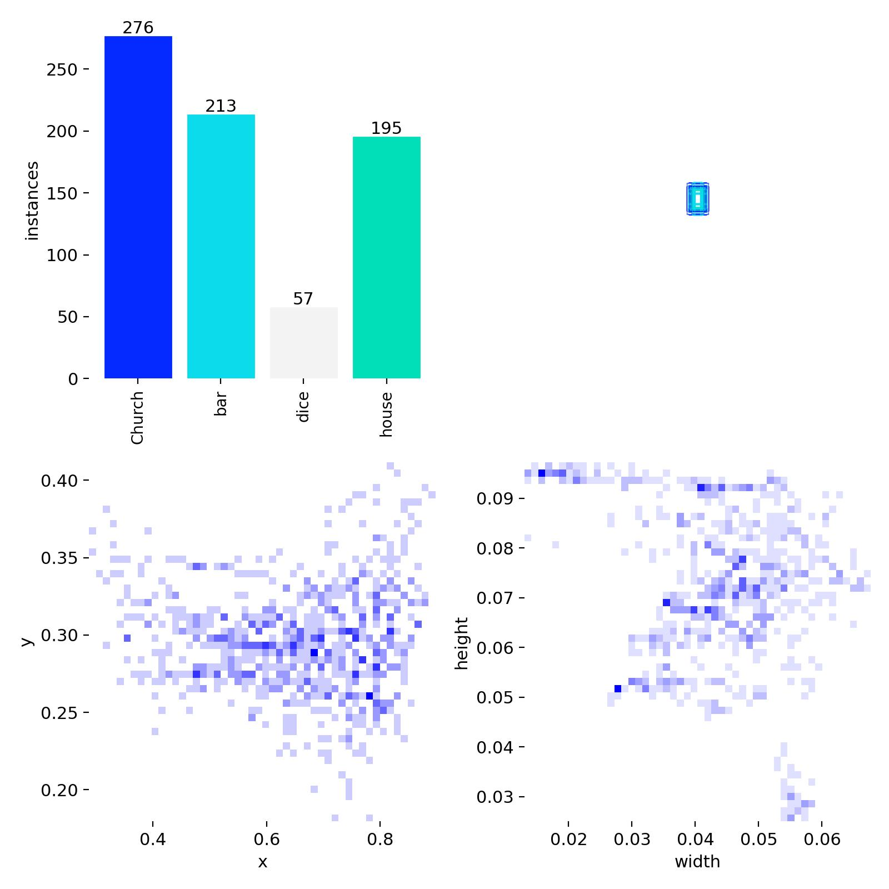

Building a Custom Dataset from Scratch
With no existing dataset for these objects, the entire training corpus had to be built from scratch. The approach was pragmatic: capture video of the actual physical setup, same lighting, same camera angle, same conveyor belt surface, and extract frames at a rate that captures sufficient class diversity without redundancy.
Frames were extracted from a recording of the actual conveyor belt scene. This ensures the model trains on the exact domain it will be deployed in, a critical practice that eliminates domain shift between training and inference.
The raw frames were imported into Roboflow, where each object instance was manually annotated by drawing precise bounding boxes and assigning class labels. Each annotation becomes a ground truth data point that the model learns to replicate.

Manual bounding box annotation of custom classes (Church, Bar, Dice, House) within Roboflow. Each shape required individual labeling across all collected frames.

📁 Placelabels.jpg in this folderDataset label distribution: Church (276), Bar (213), House (195), Dice (57). The Dice class imbalance was partially addressed through augmentation.